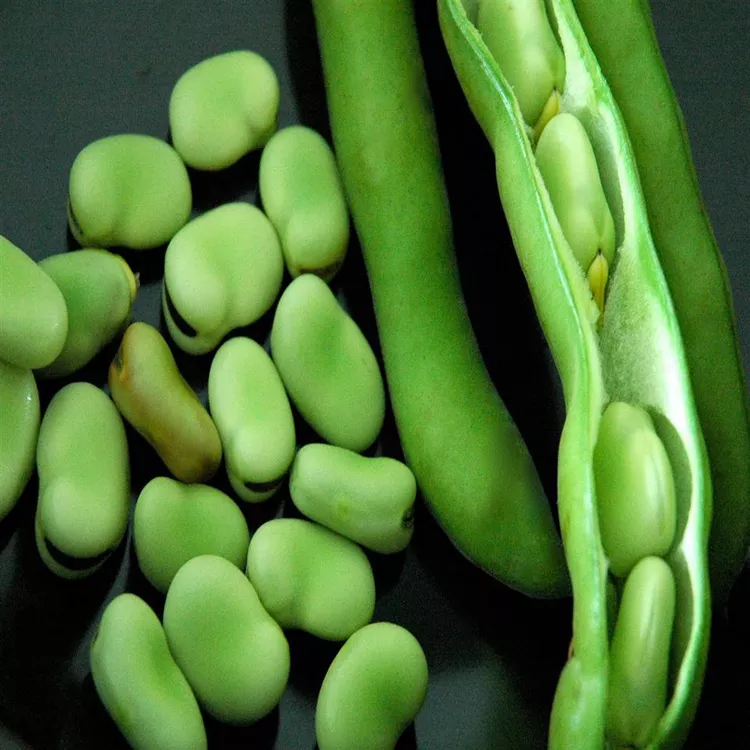

Meze Fava Beans

Description
Fava beans sauteed with onions. A traditional Turkish dish. Served at room temperature with garlic yogurt.
Ingredients
- 3 tablespoons olive oil
- ½ onion, chopped
- 1 ½ pounds fresh fava beans, shelled
- 2 tablespoons water
- 1 teaspoon all-purpose flour
- 1 cup boiling water
- 1 teaspoon lemon juice
- ½ teaspoon white sugar
- salt to taste
- ½ cup chopped fresh dill
Steps
- Heat oil in a skillet over medium heat. Add onions; cook and stir until fragrant, about 1 minute. Toss in fava beans and cook until slightly tender, about 2 minutes.
- Cut the dough into four portions. Shape the dough into rounds and flatten each round as though you're making pizza dough. Cover the rounds with a damp cloth and let the dough rest for 15 minutes.
- Mix 2 tablespoons water and flour together in a bowl; pour into the fava bean mixture. Add 1 cup water, lemon juice, sugar, and salt. Cover and bring to a boil. Reduce heat to low and simmer until fava beans are very tender, about 5 minutes.
- Stir dill into the fava bean mixture; continue simmering until flavors are combined, about 2 minutes. Let cool to room temperature.
Return to homepage